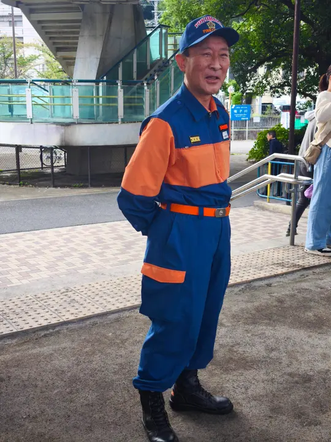
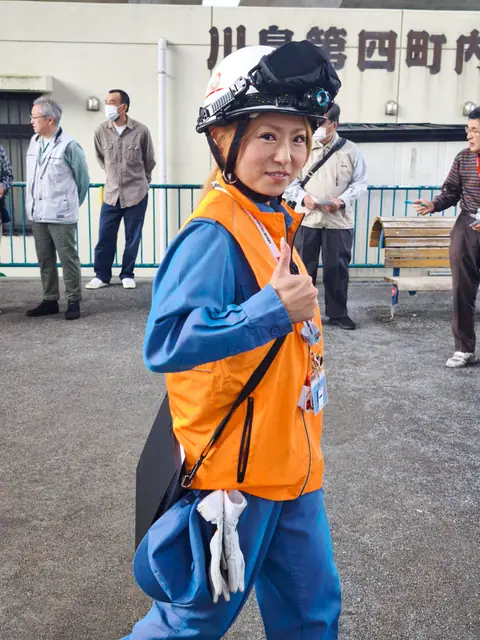
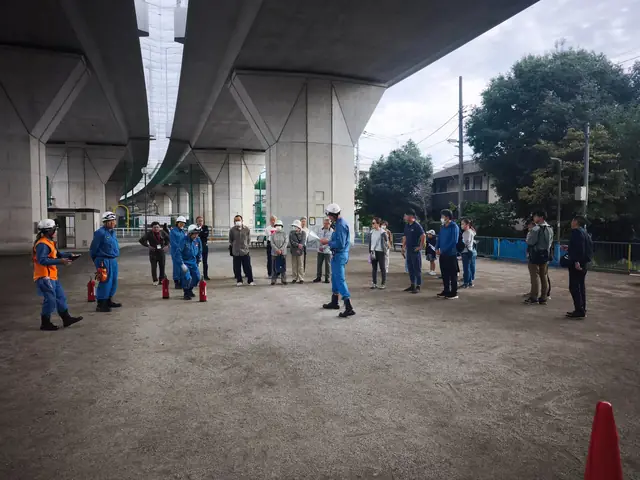
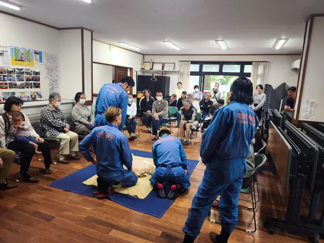
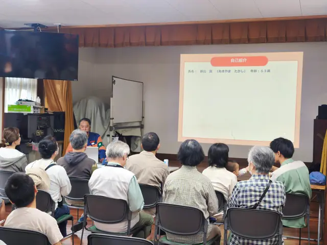

2026年10月4日・開催報告
川島第四町内会 町内防災訓練
消防団と地域の皆さんが一緒に、実際に体験しながら「もしも」に備えました。
実施時間9:00～10:30
会場川島第四町内会館
協力保土ケ谷消防団 第四分団第一班
実施した内容
- 水消火器による初期消火訓練
- 心肺蘇生・AEDの操作方法訓練
- 防災に関する講話
予定どおり訓練を終了しました
式次第に沿って進行し、予定していた内容を実施。実際に体験することで、消火器やAEDを使う際の流れや、いざという時の行動を地域の皆さんと確認しました。
🚒 御礼
保土ケ谷消防団 第四分団第一班の皆さまには、訓練の実演・説明など多大なご協力をいただきました。開会時から訓練全体を通して、消防団の皆さまに丁寧なご説明・ご指導をいただきました。また、ご参加いただいた地域の皆さま、準備・運営に携わった皆さまにも心より御礼申し上げます。ありがとうございました。
保土ケ谷消防団 第四分団第一班の皆さまには、訓練の実演・説明など多大なご協力をいただきました。開会時から訓練全体を通して、消防団の皆さまに丁寧なご説明・ご指導をいただきました。また、ご参加いただいた地域の皆さま、準備・運営に携わった皆さまにも心より御礼申し上げます。ありがとうございました。










訓練を終えて
災害はいつ起こるか分かりません。今回の訓練で学んだことを、日頃の備えやご家庭での防災確認につなげていただければ幸いです。川島第四町内会では、今後も地域の皆さんと一緒に安心・安全なまちづくりを進めてまいります。
災害はいつ起こるか分かりません。今回の訓練で学んだことを、日頃の備えやご家庭での防災確認につなげていただければ幸いです。川島第四町内会では、今後も地域の皆さんと一緒に安心・安全なまちづくりを進めてまいります。